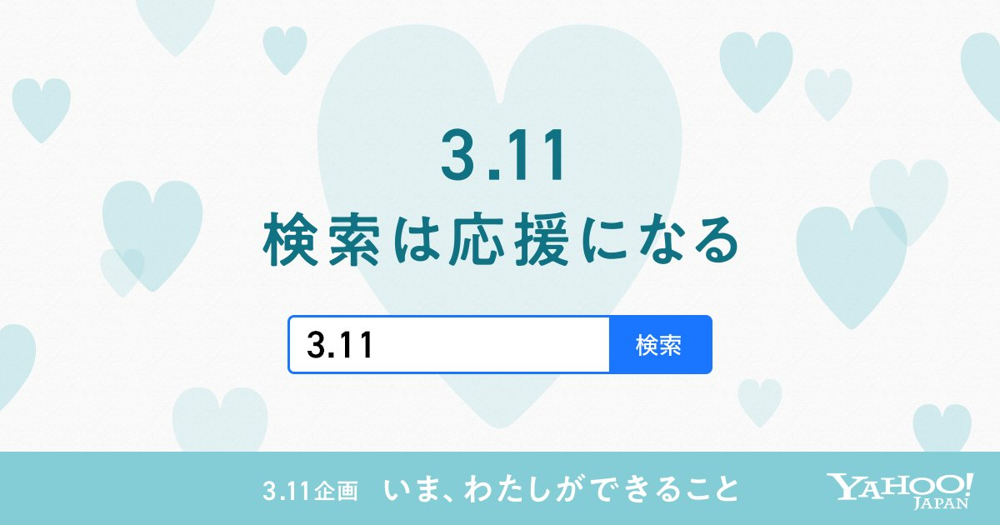
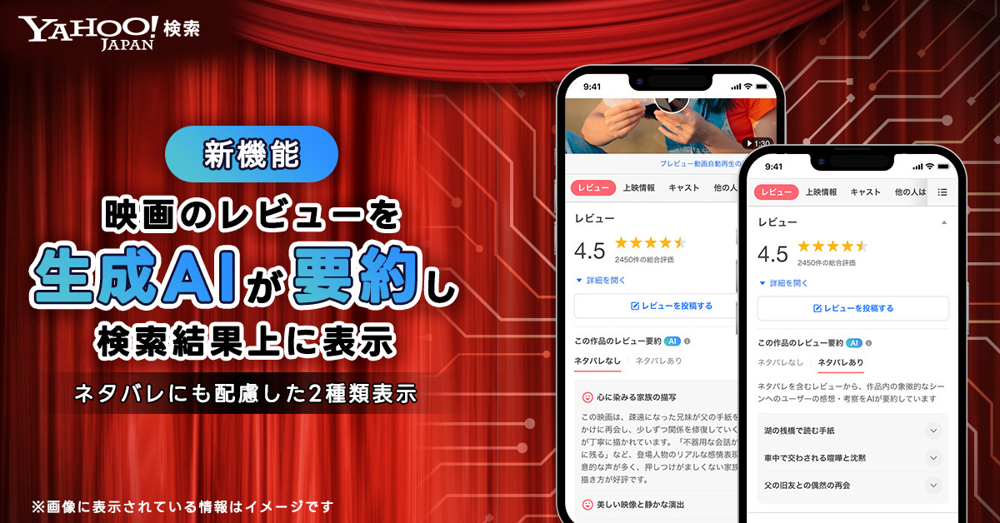
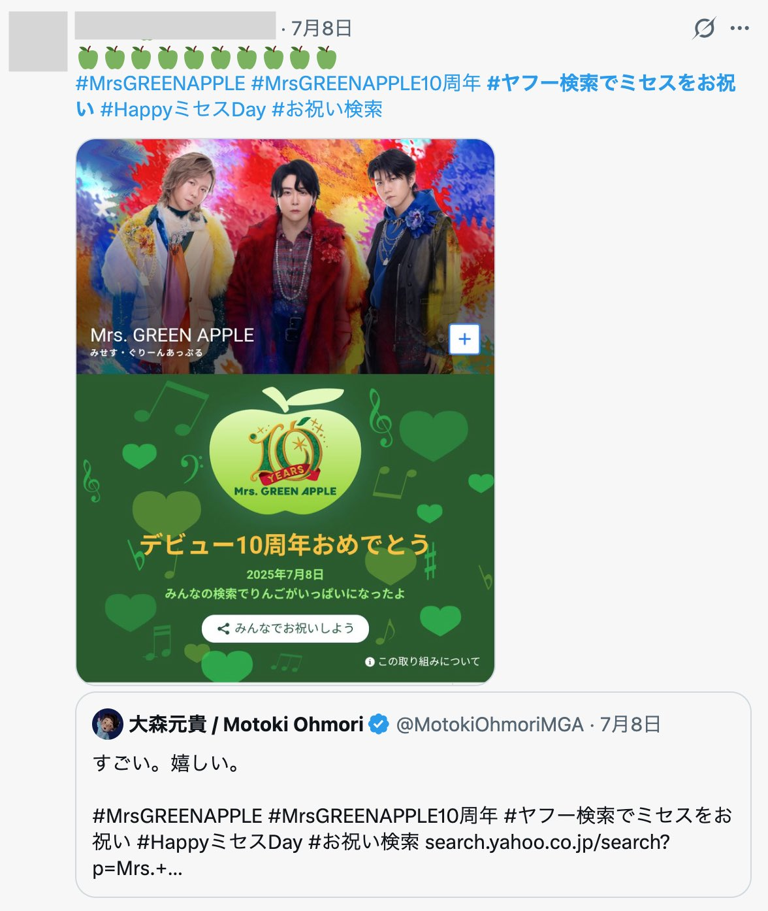

検索結果面に表示するYahoo!検索広告UIのフロント実装を2年半担当
多くのUI改善施策を事故なく短期でリリース
例：クレジットカード
2020年「3.11検索は応援になる企画」のフロント実装を担当
毎年デザインを刷新し、3月11日の1日限定で掲出する企画
アクセスが集中する中でも、事故なく無事に公開

映画の作品名の検索結果で確認できる映画レビューを件数が多く必要な情報が見つけにくいという課題を解決できる「映画レビューAI要約」を検索結果面に表示をリリースし、よりスムーズに情報収集ができるようになった
例：国宝

2025年7月8日「Mrs.Green Apple デビュー10周年企画」のフロント実装を担当
1日限定で検索結果面に特別演出を掲出
PJメンバーでアイディアを出し合いながら早い段階から実装を進め実現可能性を確認しつつ短期間でリリース
当日公開中はSNSでたくさんの方の反響あり、ご本人からも反応いただけた